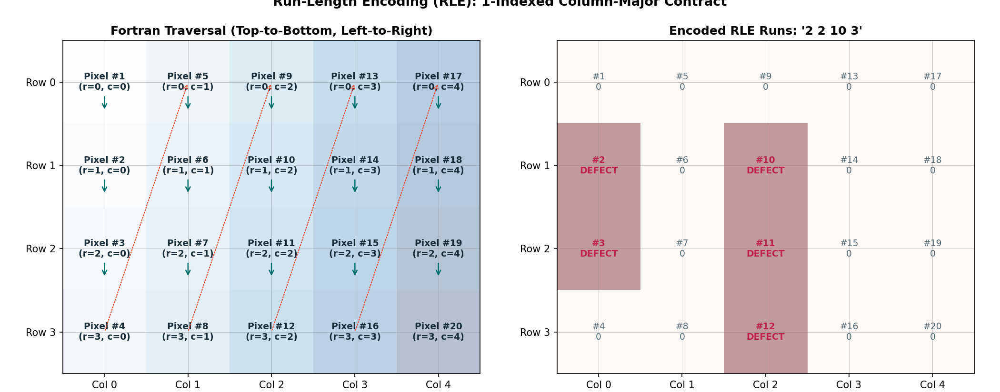

Guide 06: Submission Integrity & The Competition Contract: Schema, RLE & Sentinels
After weeks of deep learning architecture design, loss function tuning, threshold optimization, and ensembling, everything culminates in a single file:
/kaggle/working/submission.csv
Kaggle’s automated scoring system is completely unyielding. It does not inspect your PyTorch training code, verify your training loss curves, or give partial credit for elegant neural architectures. It executes an automated, programmatic ingest pipeline that parses your submitted CSV file against strict schema rules.
If your submission file contains 12,000 rows instead of 12,001, if column headers are swapped, if empty predictions are saved as empty strings "" (which parse as null values), or if a run-length string overflows beyond pixel 102,400, the evaluation engine immediately crashes with:
Submission Scoring Error
Your submission could not be scored because the submission file format was invalid.In this guide, you will dissect the precise submission contract of the Industrial Surface Defect Detection competition, master the 1-indexed column-major Fortran RLE standard, understand the single-space empty-mask sentinel (" "), and implement a programmatic pre-flight verification validator to guarantee 100% Kaggle compliance.
1. Concrete Failure Case: The Null String Rejection
Consider a team of students who build a high-performing ensemble achieving a 0.68 validation score.
At the end of their inference notebook, they serialize their predictions using standard Pandas:
# FATAL FLAW: Naive Pandas serialization of empty masks!
submission_df["mask_rle"] = submission_df["mask_rle"].fillna("")
submission_df.to_csv("submission.csv", index=False)In the resulting CSV file:
ID,image_id,defect_type,mask_rle
1,TEST_0001,defect_a,
2,TEST_0001,defect_b,
3,TEST_0001,defect_c,2450 12 2580 8
4,TEST_0001,defect_d,Notice rows 1, 2, and 4: because there was no predicted defect, the field after the comma is empty (...defect_a,).
What Happens on Kaggle?
When Kaggle’s automated evaluator reads this CSV, empty CSV fields (,,) parse as NaN / null values. The evaluator rejects the submission:
Evaluation Rejection: Empty/NaN value detected in column 'mask_rle' on row 1. Submission rejected.
Because clean, defect-free material represents a large proportion of industrial production, thousands of rows in submission.csv represent empty masks. If you do not format these empty rows with the exact required sentinel, your submission fails instantly.
2. The 7 Rules of the Competition Contract
The competition template is established in data/public/sample_submission.csv. Your submission must strictly adhere to seven rules:
Rule 1: Exactly 12,001 Lines
- 1 header row + 12,000 prediction rows.
-
The test set contains exactly 3,000 images. Each image must have exactly 4 rows (one per defect class).
\[3000\text{ test images} \times 4\text{ defect classes} = 12000\text{ prediction rows}\] -
No missing rows, no duplicate rows, and no extra lines.
Rule 2: Strict Column Header Schema
The header row must match the template character-for-character:
ID,image_id,defect_type,mask_rleRule 3: Row Identifier Sequential Ordering
The ID column must be a 1-indexed contiguous integer sequence from 1 to 12000:
- Row 1:
ID = 1 - Row 12,000:
ID = 12000
Rule 4: Defect Class Ordering
For every test image, the four defect types must be listed in the canonical order:
defect_adefect_bdefect_cdefect_d
Rule 5: The Mandatory Single-Space Sentinel (" ")
If an image-class pair contains no predicted defect (an all-zero binary mask), the mask_rle column must contain exactly one ASCII space: " " (ASCII code 32).
- Blank string
"": ❌ Rejected as null. NaN/None: ❌ Rejected as null.- Zero
"0": ❌ Rejected as corrupt RLE. - Single space
" ": ✅ Parsed by Kaggle as a non-null valid empty mask!
Rule 6: 1-Indexed Column-Major Fortran RLE
Run-Length Encoding must follow the Kaggle / Severstal standard:
- Pixel coordinates are 1-indexed (first pixel in upper-left corner is index 1, not 0).
- Traversal is column-major (
order='F'): pixels are traversed top-to-bottom along column 0, then top-to-bottom along column 1, and so on. - Format: Space-delimited pairs of
start length start length ....
Rule 7: Strict Boundary Clamping at 102,400 Pixels
Industrial strip dimensions are fixed at Height = 128, Width = 800.
- The maximum permissible end index is \(102,400\).
-
Any run ending beyond index 102,400 causes an index overflow error in the evaluator. Always clamp decoded/encoded runs:
\[\text{end} = \min(\text{start} + \text{length}, 102400)\]
3. Worked Numerical Example: The Fortran Traversal Grid

Figure 6.1: (Left) Column-major Fortran traversal on a 2D grid: indices increment vertically top-to-bottom before advancing to the next column. (Right) Encoding two defect runs into start-length pairs.Let us trace a tiny \(4 \times 5\) canvas (\(H = 4, W = 5\), total 20 pixels) to see how 1-indexed Fortran traversal works:
Row / Col Col 0 Col 1 Col 2 Col 3 Col 4
Row 0 px #1 px #5 px #9 px #13 px #17
Row 1 px #2 px #6 px #10 px #14 px #18
Row 2 px #3 px #7 px #11 px #15 px #19
Row 3 px #4 px #8 px #12 px #16 px #20Notice the column-major traversal:
- Column 0 contains pixels 1, 2, 3, 4.
- Column 1 contains pixels 5, 6, 7, 8.
- Column 2 contains pixels 9, 10, 11, 12.
Encoding a Toy Defect Mask
Suppose our model predicts defects at the following coordinates:
- Defect Run 1: Column 0, Rows 1 and 2 (pixels #2 and #3).
- Defect Run 2: Column 2, Rows 1, 2, and 3 (pixels #10, #11, and #12).
Binary Mask Grid:
[ 0 0 0 0 0 ]
[ 1 0 1 0 0 ] <-- Active at (1, 0) and (1, 2)
[ 1 0 1 0 0 ] <-- Active at (2, 0) and (2, 2)
[ 0 0 1 0 0 ] <-- Active at (3, 2)-
Flatten in Fortran Order:
\[\text{Pixels } 1..20 = [0, \mathbf{1}, \mathbf{1}, 0, 0, 0, 0, 0, 0, \mathbf{1}, \mathbf{1}, \mathbf{1}, 0, 0, 0, 0, 0, 0, 0, 0]\] -
Identify Continuous Runs:
- Run 1 starts at pixel 2, spans 2 consecutive pixels. \(\to\)
2 2 - Run 2 starts at pixel 10, spans 3 consecutive pixels. \(\to\)
10 3
- Run 1 starts at pixel 2, spans 2 consecutive pixels. \(\to\)
-
Formatted RLE String:
\[\text{"2 2 10 3"}\]
4. The Canonical Encoder and Clamped Decoder
import numpy as np
def rle_encode(mask: np.ndarray) -> str:
"""Encode binary mask (H, W) into 1-indexed column-major Fortran RLE string.
Returns ' ' (single ASCII space) if mask is empty.
"""
if mask.sum() == 0:
return " "
# Flatten in column-major Fortran order
dots = mask.flatten(order="F")
runs = np.where(dots[1:] != dots[:-1])[0] + 2
prefix = np.array([1], dtype=np.int64) if dots[0] else np.array([], dtype=np.int64)
suffix = np.array([len(dots) + 1], dtype=np.int64) if dots[-1] else np.array([], dtype=np.int64)
runs = np.concatenate([prefix, runs.astype(np.int64), suffix]).astype(np.int64)
starts = runs[::2]
lengths = runs[1::2] - starts
return " ".join(f"{int(s)} {int(l)}" for s, l in zip(starts, lengths))
def rle_decode(rle_str: str, shape: tuple[int, int] = (128, 800)) -> np.ndarray:
"""Decode 1-indexed Fortran RLE string into a binary mask of given shape.
Clamps end indices to prevent canvas overflow.
"""
if not rle_str or str(rle_str).strip() == "":
return np.zeros(shape, dtype=np.uint8)
s = rle_str.split()
starts = np.asarray(s[0::2], dtype=int) - 1
lengths = np.asarray(s[1::2], dtype=int)
# Critical: Clamp end index to total canvas pixels
max_pixels = shape[0] * shape[1]
ends = np.minimum(starts + lengths, max_pixels)
canvas = np.zeros(max_pixels, dtype=np.uint8)
for lo, hi in zip(starts, ends):
canvas[lo:hi] = 1
return canvas.reshape(shape, order="F")5. Automated Pre-Flight Submission Audit Script
Never submit a CSV file without running an automated verification check. Embed this audit directly at the end of your inference notebook:
import csv
import os
from pathlib import Path
def validate_submission_file(csv_path: str, expected_num_images: int = 3000) -> bool:
"""Run a comprehensive 7-point audit on the generated submission CSV file."""
print(f"Auditing submission file: {csv_path}...")
assert os.path.exists(csv_path), f"File not found: {csv_path}"
with open(csv_path, mode="r", encoding="utf-8") as f:
reader = csv.reader(f)
# Check 1: Header Schema
header = next(reader)
expected_header = ["ID", "image_id", "defect_type", "mask_rle"]
assert header == expected_header, f"Header mismatch! Expected {expected_header}, got {header}"
rows = list(reader)
# Check 2: Exact Row Count
expected_rows = expected_num_images * 4
assert len(rows) == expected_rows, f"Row count error! Expected {expected_rows}, found {len(rows)}"
valid_defects = ["defect_a", "defect_b", "defect_c", "defect_d"]
empty_sentinel_count = 0
active_prediction_count = 0
seen_ids = set()
for idx, (row_id, img_id, defect, rle) in enumerate(rows, start=1):
# Check 3: Sequential ID
assert int(row_id) == idx, f"Row {idx}: ID non-sequential (got {row_id})"
# Check 4: Valid Defect Class
expected_defect = valid_defects[(idx - 1) % 4]
assert defect == expected_defect, f"Row {idx}: Defect order mismatch (expected {expected_defect}, got {defect})"
# Check 5: No Blank Strings or Nulls
assert rle != "", f"Row {idx}: Blank string detected! Must be ' ' for empty masks."
if rle == " ":
empty_sentinel_count += 1
else:
active_prediction_count += 1
tokens = rle.split()
# Check 6: Even number of RLE tokens
assert len(tokens) % 2 == 0, f"Row {idx}: Odd RLE token count ({len(tokens)})"
# Check 7: RLE Boundary Clamping & Decodability
starts = [int(tokens[i]) for i in range(0, len(tokens), 2)]
lengths = [int(tokens[i+1]) for i in range(0, len(tokens), 2)]
for s, l in zip(starts, lengths):
assert s >= 1, f"Row {idx}: Non-positive start index ({s})"
assert s <= 102400, f"Row {idx}: Start index {s} exceeds 102,400"
assert s + l <= 102401, f"Row {idx}: Run ends at {s+l}, exceeding boundary!"
file_size_mb = os.path.getsize(csv_path) / (1024 * 1024)
print("=" * 65)
print("✓ SUBMISSION AUDIT PASSED 100% CLEANLY")
print(f" • Total rows verified : {len(rows)} (12,001 lines with header)")
print(f" • Empty masks (' ') : {empty_sentinel_count} ({empty_sentinel_count / len(rows) * 100:.1f}%)")
print(f" • Active defect masks : {active_prediction_count} ({active_prediction_count / len(rows) * 100:.1f}%)")
print(f" • File size on disk : {file_size_mb:.2f} MB")
print("=" * 65)
return True6. Decision Analysis: Submission Engineering Checklist
| Checklist Item | What to Check | Failure Mode if Missed |
|---|---|---|
| Row Count | wc -l submission.csv must yield 12001. |
Missing rows trigger scoring failure. |
| Column Names | ID,image_id,defect_type,mask_rle. |
Mismatched headers cause CSV parser rejection. |
| Empty Sentinel | Exactly " " (single space string). |
Null entries trigger immediate submission scoring error. |
| Fortran Ordering | order='F' in NumPy flatten/reshape. |
Transposed predictions have ~0.00 IoU with ground truth. |
| Index Clamping | Maximum index \(\le 102,400\). | Canvas overflow errors crash the Kaggle backend. |
7. Ungraded Activity: Spot the Submission Bug
Examine the following 4 candidate CSV excerpts from student submissions. Identify which one is valid, and diagnose the fatal bug in each of the other three:
Excerpt 1:
ID,image_id,defect_type,mask_rle
1,TEST_0001,defect_a,
2,TEST_0001,defect_b,
3,TEST_0001,defect_c,100 15
4,TEST_0001,defect_d,Excerpt 2:
ID,image_id,defect_type,mask_rle
1,TEST_0001,defect_a,0
2,TEST_0001,defect_b,0
3,TEST_0001,defect_c,100 15
4,TEST_0001,defect_d,0Excerpt 3:
ID,image_id,defect_type,mask_rle
1,TEST_0001,defect_a,
2,TEST_0001,defect_b,
3,TEST_0001,defect_c,100 15
4,TEST_0001,defect_d, Excerpt 4:
image_id,defect_type,mask_rle
TEST_0001,defect_a,
TEST_0001,defect_b,
TEST_0001,defect_c,100 15
TEST_0001,defect_d, (Hint: Inspect column names, empty string representation, and numerical 0).
8. Authoritative Competition Specifications
- Kaggle Competition Rules: Industrial Surface Defect Detection Submission Guidelines
- Severstal Steel Defect Detection: Kaggle Official RLE Standard
- NumPy Documentation:
numpy.ndarray.flatten(order='F')